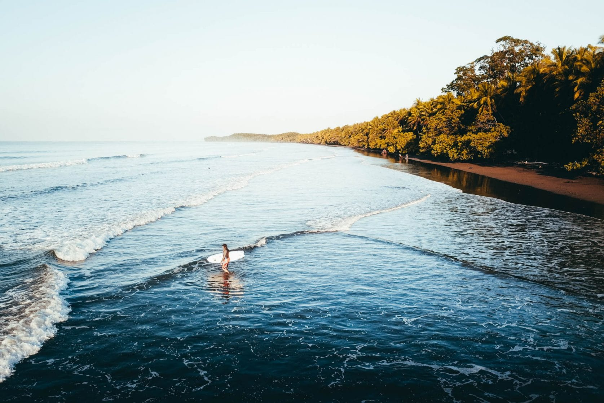
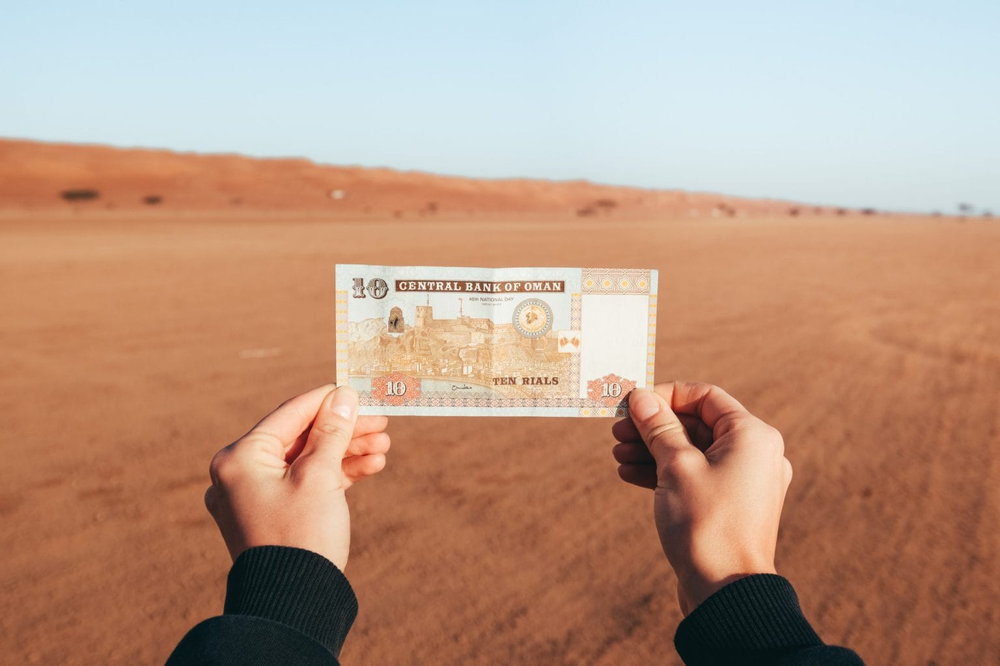

Hoe overtuig ik mijn ouders dat ik alleen op reis kan?
#1 Zorg dat je ook daadwerkelijk oud genoeg bent en dat het land waar je heen wilt ook echt veilig is
Als je alleen op reis wilt dan is, als je het aan ons vraagt, vanaf 18 jaar een prima leeftijd. Het ligt natuurlijk ook voor een groot deel aan je persoonlijkheid. Onder de 18 zal alleen reizen niet echt een aanrader zijn. Er kan altijd van alles misgaan en een beetje levenservaring heb je wel nodig. Een vakantie naar Spanje is natuurlijk een ander verhaal maar wij hebben het hier over reizen, een backpack omdoen en het avontuur opzoeken. Ga eens op onderzoek uit om erachter te komen of alleen reizen wel veilig is in het land waar je heen wilt. Als vrouw alleen door India backpacken is bijvoorbeeld een stukje minder veilig dan backpacken door Thailand. Op Rijksoverheid.nl kun je het reisadvies van alle landen vinden. Vaak overdrijven ze wel enorm over mogelijke gevaren dus dit aan je ouders laten lezen is niet altijd slim.
#2 Begin met wat luchtige gesprekken over reizen en laat merken dat je interesse hebt
De eerste fout heb je waarschijnlijk al gemaakt. In een enthousiaste bui heb jij je ouders verteld dat je alleen wilt gaan reizen door een land dat voor hen ‘onbekend’ en ‘gevaarlijk’ is. Het is slimmer om zo nu en dan gewoon eens te beginnen over reizen en een luchtig gesprek aan te knopen. Zo merken ze dat je interesse hebt en schrik je ze niet meteen af met allerlei wilde plannen. Ook als je jouw ouders al hebt verteld dat je alleen naar een ver land wilt dan kan het handig zijn om dit te doen. Zo merken ze dat jouw idee om alleen te reizen geen impuls was en het nog steeds in je hoofd zit. Laat ze rustig wennen aan jouw krankzinnige idee om die gevaarlijke wereld te gaan ontdekken.
#3 Maak een reisplanning en een financieel plan
Een goede planning maakt dat gekke idee al een stuk minder eng voor je ouders. Ook al wil je gewoon gaan en wel zien waar je uitkomt, maak toch een planning. Je kunt hier altijd nog van afwijken of het bij aankomst gelijk in de prullenbak gooien. Als je ouders weten wat je plannen zijn dan hebben ze een beter beeld bij wat je nu eigenlijk gaat doen en dat zal zeker helpen. Daarnaast moet je het natuurlijk ook kunnen betalen. Een makkelijke reden om jouw reisplannen van tafel te gooien zijn de hoge kosten. Maak dus een financieel plan van wat je denkt uit te gaan geven. Wij hebben voor veel landen een artikel geschreven over de kosten. In dit artikel lees je precies wat reizen in dat land kost en aan de hand daarvan kan je bepalen hoeveel geld er op je rekening moet staan voor jouw reis.
#4 Leg uit waarom je alleen wilt reizen en waarom dit zo goed voor je zal zijn
Reizen is altijd goed voor je, laten we daarmee beginnen. Je leert onderweg ontzettend veel over de wereld, over jezelf en over andere culturen. Ga voor jezelf eens na waarom je eigenlijk per se alleen wilt reizen en als je dit weet, leg dit dan ook goed uit aan je ouders. Daarbij zijn er een heleboel redenen waarom alleen reizen in het speciaal goed voor je zal zijn.
#5 Laat foto’s en video’s zien
Laat zo nu en dan eens wat zien van het land waar je naartoe wilt. Veel ouders die zelf nog nooit buiten Europa zijn geweest hebben een totaal ander beeld van verre landen dan jij hebt en waarschijnlijk kan je een stukje van dat negatieve beeld vervangen door wat mooie foto’s te laten zien. Laat ze in ieder geval geen foto’s en video’s zien van ‘gevaarlijke’ dingen. Dus geen foto’s van die toffe bungeejump in Nieuw-Zeeland, die gekke Full Moon Party in Thailand of van het duiken met haaien in Zuid-Afrika. Laat vooral foto’s zien van mooie natuur en lachende locals.
#6 Nodig iemand uit die je ouders kennen en die ook alleen op reis is geweest
Mocht je iemand kennen die op reis is geweest door het land waar je heen wilt en die ook nog eens je ouders kent dan kan dit ontzettend veel helpen. Nodig die persoon eens uit om te komen praten over je reisplannen. Het hoeft niet zo geforceerd te zijn dat je ook je ouders erbij vraagt maar plan het gewoon op een avond dat ze toch thuis zijn. Niets is beter dan van iemand die je kent te horen dat een land veilig is en waarschijnlijk heb je zelf ook veel aan zo’n gesprek. Diegene heeft vast een boel handige tips.